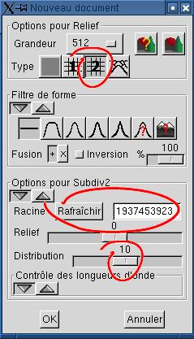
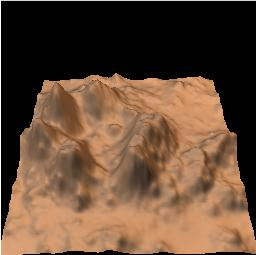

| 1. Création de l'image de relief Créez un nouveau document de type subdivision #2.  Réglez la distribution à une
valeur élevée. Cela vous donnera des sommets
éparpillés.
Cliquez sur le bouton "Rafraîchir" jusqu'à ce que vous obteniez quelques sommets regroupés. Vous pouvez aussi recopier la racine donnée en exemple. Il n'est pas important que les sommets se trouvent au bon endroit pour l'instant, nous les déplacerons plus tard. Ils est préférable cependant qu'ils soient groupés dans un espace assez restreint, afin de transformer le reste de l'image en plaine, notre avant-plan. (DA est la déformation aléatoire, qui varie entre 0 et MAX): DÉFORMATION_RÉELLE = puissance (DA/MAX ; DISTRIBUTION) x MAX;Notez que MAX dépend de l'échelle, qui dépend de l'étape de subdivision. Dans l'algorithme "subdivision 2", MAX est divisé par 2 à chaque étape de subdivision. |
|
| 2. Utilisation de la transformation de
puissance pour créer une plaine L'objectif est de diminuer l'altitude des parties les plus basses du terrain, sans affecter les sommets. Ici, vous pouvez utiliser les
paramètres par défaut de la transformation de puissance.
L'altitude de chaque pixel est élevée au carré (le
"Paramètre" est l'exposant), puis le résultat est
normalisé pour tenir dans l'intervalle 0-65535.
Si les alentours des sommets vous semblent assez sombres, acceptez le résultat. Autrement, faites "Remettre à 0" et essayez une valeur plus élevée. Avec un exposant élevé, le sol s'aplatit et perd tout détail, si c'est ce que vous désirez. |
 |
| 3. Translation du terrain Nous voulons placer la caméra au centre-Sud, tournée vers le centre-Nord. Les montagnes seront centrées Est-Ouest, pour se trouver dans l'axe de la caméra, et déplacées au Nord, à l'arrière-plan, pour voir la plaine. Déplacer l'image de 15% Est centre les sommets, et la déplacer 15% Nord place les sommets à l'arrière-plan. Dans la version 0.12 de Geomorph, l'affichage du document clignote lorsque la translation est acceptée. C'est ennuyant mais le résultat n'est pas affecté. |
|
| 4a. Stratification des montagnes L'outil "Terrasses" permettra de stratifier les montagnes pour en faire des mésas. La stratification est un processus en trois étapes, bien que le résultat soit utilisable dès la première étape: (1) Stratifier les altitudes. (2) Lisser et retirer le bruit indésiré. (3) Fusionner le résultat avec l'image originale. La fusion sera discutée au point 4b. Une mésa a un nombre limité de niveaux d'altitude, contrairement aux terrasses utilisées pour l'agriculture. Choisissons 4 niveaux. Le processus de base crée des strates d'égale hauteur. C'est assez ennuyant. Le paramètre de variation aléatoire vise à corriger cette situation. Par défaut, il est fixé à 50% de la hauteur moyenne des strates. On peut l'interpréter comme ceci: "déplacer l'altitude de la strate courante d'une valeur aléatoire située entre 0% et 50% de la hauteur calculée d'une strate". Si vous n'êtes pas satisfait de l'altitude de certaines strates, par exemple s'il y a trop d'"aiguilles" ou de pics étroits, cliquez sur "Rafraîchir" à volonté. La hauteur de chaque strate variera, de même que son étendue, pourvu que la variation aléatoire ne soit pas à 0%. Cliquez sur la flèche de gauche sous "Post-traitement du résultat" pour obtenir le dialogue de lissage et de suppression des artéfacts. Le lissage donne un résultat plus naturel. Un rayon de 2 est suffisant pour notre image de 512x512, étant donné que nous fusionnerons le résultat avec l'original pour augmenter le détail visible dans les parties plates. Utilisez la "suppression d'artefacts" si votre image contient des taches non désirées, qui se traduisent par des aiguilles sur le rendu final, et si vous ne pouvez pas vous en débarrasser en rafraichissant la racine aléatoire. Le rayon est en pixels. Pour un effet donné, le rayon doit être proportionnel à la grandeur de l'image (10 pour 512x512 équivaut à 20 pour 1024x1024). Le post-traitement est coûteux, aussi il n'est pas immédiat. Cliquez "Appliquer" pour voir le résultat, puis attendez. |
 
|
| 4b. Fusion du résultat avec l'image
source L'aperçu montre une plaine très plate et ennuyante autour des sommets. Le rendu calculé à l'aide de desert.pov est encore pire (la plaine se retrouvera probablement sous le plan du sol). Le dernier sous-dialogue de l'outil "Terrasses" permet de fusionner l'image d'origine et le résultat dans des proportions variables. La fusion réintroduit un certain détail sur le sol, tout en adoucissant les arêtes des terrasses. Cliquez sur la flèche de gauche pour afficher le dialogue. Si votre bureau n'est pas énorme, vous voudrez probablement ferme le dialogue de post-traitement en cliquant sur sa flèche de droite. Le "Mode" = "+" par défaut convient à nos besoins. Le mélange par défaut est 100% résultat + 0% source. Cliquez sur le bouton "0" button à la droite pour fusionner la source et le résultat en proportions égales. C'est le ratio utilisé pour ce tutoriel. Vous pouvez expérimenter avec d'autres proportions. |

|
| 5. Érosion des mésas avec la
pluie Vous pouvez calculer la scène maintenant en cliquant L'érosion doit être légère. Nous ne voulons pas détruire totalement les arêtes des terrasses. Pour une image de 512x512, essayez environ 25000 gouttes. Calculez la scène, et si vous n'êtes pas satisfait, changez la nombre de gouttes et faites "Appliquer". Si vous n'avez pas cliqué "Accepter", les gouttes vont être réappliquées au relief non érodé. Si vous désirez seulement ajouter des gouttes, choississez la quantité à ajouter et cliquez "Répéter". Vous évitez le recalcul de 25000 gouttes! |
  |
| 6. Calcul de la scène finale avec
Povray La définition de scène desert.pov fournie avec Geomorph 0.12 et ultérieur est couplée avec la caméra d'aperçu. Le résultat final montré plus haut est obtenu avec les paramètres donnés à droite. Souvenez-vous que les paramètres de caméra sont sauvegardés à l'intérieur du fichier PNG. Ici, la première caméra est utilisée. Les autres caméra conservent les paramètres par défaut, comme ceux utilisés dans les étapes 1 à 5 de ce tutoriel. Peut-être trouverez-vous que le résultat a besoin de certains ajustements. Regardez le fichier desert.pov dans votre éditeur de fichiers textes préféré. Les paramètres que vous désirerez probablement modifier sont groupés à la fin du fichier, après la ligne d'astérisques. Pour cette scène:
|
|
 Retour à la page
d'accueil de Geomorph
Retour à la page
d'accueil de Geomorph